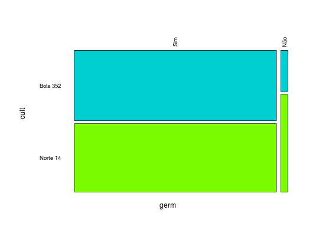
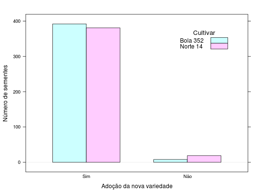

Experimento com o objetivo de avaliar o poder germinativo de duas cultivares de cebola. Foram utilizadas, para o teste de germinação, quatro repetições de cem sementes totalizando quatrocentas sementes para cada cultivar. Nesse experimento mensurou-se apenas a frequência das sementes que germinaram, ou não, dentre as repetições de cada cultivar.
Um data.frame com 4 observações e 3 variáveis, em que
cultBola 352 e Norte 14, Norte
14).germfreqcult e
germ.Andrade, D. F., Ogliari, P. J. (2010). Estatística para as ciências agrárias e biológicas com noções de experimentação (2nd ed.). Florianópolis, SC. Editora da UFSC. (Tabela 2.25, pág. 107)
data(AndradeTb2.25) str(AndradeTb2.25)#> 'data.frame': 4 obs. of 3 variables: #> $ cult: Factor w/ 2 levels "Bola 352","Norte 14": 1 2 1 2 #> $ germ: Factor w/ 2 levels "Sim","Não": 1 1 2 2 #> $ freq: int 392 381 8 19xt <- xtabs(freq ~ ., data = AndradeTb2.25) xt#> germ #> cult Sim Não #> Bola 352 392 8 #> Norte 14 381 19mosaicplot(t(xt), col = c("darkturquoise", "lawngreen"), cex.axis = 0.8, las = 2, main = "")library(lattice) barchart(t(xt), horizontal = FALSE, stack = FALSE, auto.key = list( corner= c(0.9, 0.9), title = "Cultivar", cex.title = 1.1), xlab = "Adoção da nova variedade", ylab = "Número de sementes")